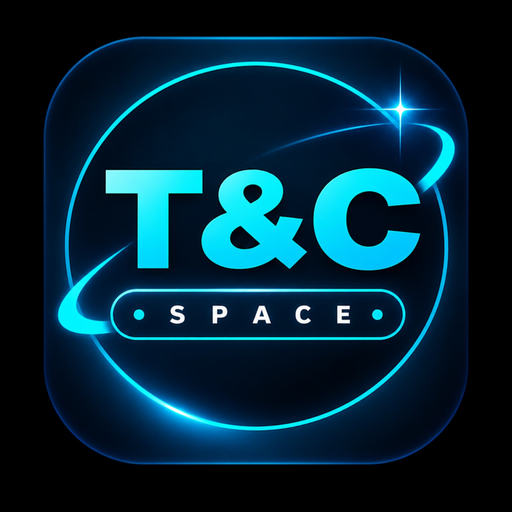

ISS ORBITAL ALTITUDE◎
423.7 km
kilometres above Earth
Keplerian / SGP4 ➔
100% Real-time public space telemetry: orbital satellite tracking, rocket countdowns, solar storms, asteroids and planetary monitoring.
Live Martian surface telemetry, 1-million-mile deep space Earth imagery with Download & Share, Martian weather sensors, and NASA experimental tech.
Contacting Deep Space Network for Mars camera downlink…
Mars atmospheric pressure is less than 1% of Earth's sea-level pressure. Telemetry is updated through NASA Mars Science Laboratory environmental monitoring.
Retrieving DSCOVR Earth polychromatic frame…
Scanning NASA Technology Portfolio…
Real-time SGP4 Keplerian orbital calculations with 2D ground track projections.
Search 14,000+ CelesTrak NORAD catalogued objects or select an instant telemetry preset:
Live schedule from Launch Library 2 with verified mission status badges, launchpad coordinates, and mission encyclopedia links.
Tracking upcoming spaceport countdowns across the globe.
Loading live orbital flight manifest…
Solar flares, coronal mass ejections (CMEs) and geomagnetic storms reported by NASA DONKI.
Real-time observed space weather phenomena.
Loading live space weather observations…
Critical close-approach asteroid radar prioritized with Lunar Distance (LD), velocity, and NASA APOD.
Active close approach flybys: distance in Lunar Distance (LD), relative speed, and hazard level.
Scanning near-Earth space radar…
Retrieving NASA's featured astronomical image and science breakdown.
USGS global seismic network (M2.5+ earthquakes) and NASA EONET active natural hazard events.
Worldwide seismic activity recorded in the past 24 hours.
Loading USGS seismic sensors…
Wildfires, active volcanoes, severe storms and sea ice monitored by NASA satellites.
Loading NASA Earth Observatory events…
Live groundwater levels, air quality, greenery, pollution, radiation, and natural resources evaluated with baseline standards.
Loading regional intelligence brief and environmental telemetry…
Verified heliocentric distance and light-time communication vectors for humanity's most distant spacecraft.
Launched 5 Sept 1977 · The most distant human-made object in history.
Launched 20 Aug 1977 · The only spacecraft to visit Uranus and Neptune.
Instant encyclopedic intelligence powered by Wikipedia's live REST API.

The James Webb Space Telescope is designed primarily to conduct infrared astronomy.
Read Full Wikipedia Article ↗Configure interface localization, appearance styling, and individual real-time alert thresholds.
Interface language and dynamic appearance settings:
All data streams are ingested live from official public endpoints. No simulated or artificial curves are rendered.
Select the specific subjects you want to receive real-time push alerts for:
T&C Space Hub is an initiative architected by Murali Manohar under the T&C (Tasty & Comfort) ecosystem. Built with a focus on un-simulated scientific integrity, speed, and zero-clutter telemetry for students, researchers, and space enthusiasts worldwide.
Click any object on the globe to stream live coordinates, altitude, velocity, and scientific parameters.